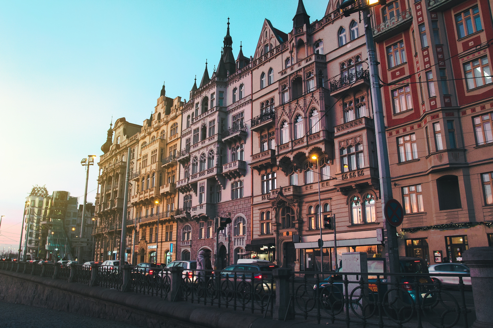
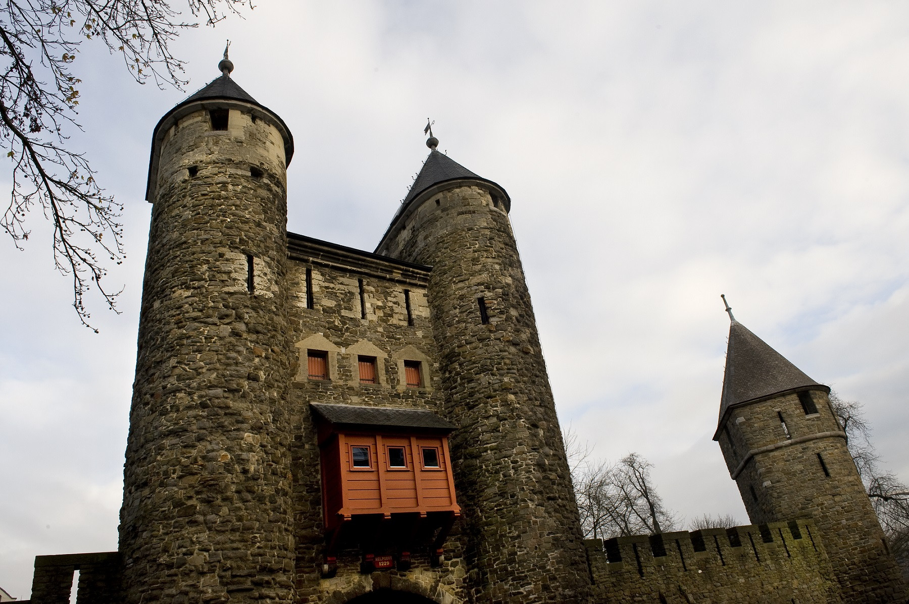

Not only is Giethoorn great in every way: in its small quaint streets and abundance of canals, but it’s also the home of DutchReview! 
Amsterdam
With its picturesque canal network, rich history and thrumming cultural scene, the capital of the Netherlands is one of the world’s most vibrant cities.
Maastricht
Maastricht is often forgotten, seeing as it’s so far away from the capital. It shouldn’t be though! Maastricht is a beautiful city, with lots of medieval architecture and plenty to do.